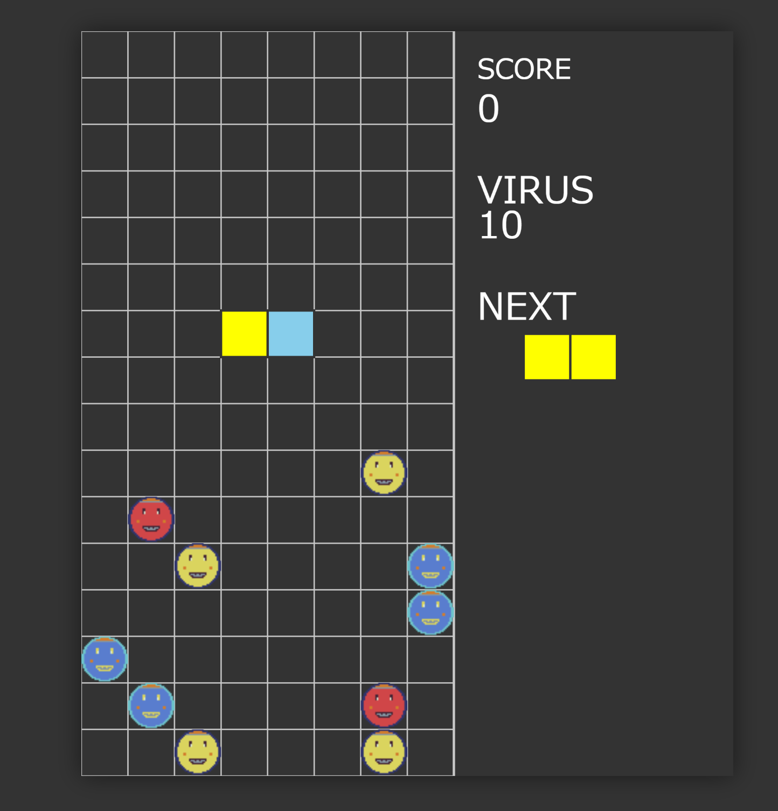

AIは趣味開発をどう変えたか？ドメイン移管からゲーム制作まで
背景
gemini cli や codex, ChatGPT とかを当たり前に使うようになって、趣味プロで今まで実装コストを理由にやってなかった問題が解けるようになった。 ここ最近やったことと学び・所感をつらつら書いていく。
ドメイン移管 お名前.com→Cloudflare
- 学生時代に安いしとりあえずでお名前.com でドメインを取っていたが、UI が使いにくかったりで移管したくて仕方がなかった
- 移管は割と待つ(最大 5 日)と言われていたが、1 時間くらい待ったら普通に承認のメールが来ていた
- Cloudflare Workers などでも遊べるようになったので、API リクエストしたら discord の incoming webhook 経由でメッセージ送るような簡単なアプリとかもついでに作って遊んだ
流れ
ChatGPT に以下のような流れで聞いて進めた
- まず普通にやり方を訊く
- 不完全な回答が返ってくるので、最新の公式ドキュメントを読ませて、UI の名前なども最新のものであることを検証させてから回答を作り直させる
- 一応使えるマシなものが返ってくる
- その通りにやりつつ、詰まったら逐一スクショを送って今どこで、これからどうすればいいかを訊く
- これができるようになったのが時代の進歩って感じがする
学び
- ドメイン移管の運用フローが分かった
- Cloudflare は気軽におもちゃが作れるものがそろいすぎている
- 普通に AWS とか契約しないとできないと思っていたものが無料で作れる
- 理解したいところだけする、ができるのが趣味プロのいいところ
- さすがに移管の注意みたいなドキュメントは読むけど、それ以外は追々でいい
- こういうインフラ系がサクっとできるようになったのは成長を感じる
- 自分用の Discord App のエンドポイントとかもどうしようかなーと思っていたので、これを機に実現性が高まった
- 次は何作ろうかな～～
学生時代にC++で作ったゲームをp5.jsで復活させた

- ここ から遊べます
- 大学 1-2 年の時に作った、BGM とプログラムを初めて自作して組み合わせた思い出のゲーム
- リポジトリは こっち
- これはもともとリポジトリがあったので、CLI 系の AI エージェントが向いてると思って gemini cli を使った
流れ
- リポジトリ全体を読み込ませ、構造を把握させてそれをドキュメントに書かせる
- p5.js に移行したいが、いきなり実装するのではなくまず実装計画を書かせる
- 計画の区切り(フェーズ)ごとに動作確認を挟む
- 実際に自分で動かす
- テストも書かせる
- 作業日報も以下のフォーマットで書かせる
- やったこと
- 学び
- TODO
- TODO が大体不完全(悪い意味でまとめてくる)なので、自分で追記する
- 断片でも詳細な情報があったほうが思い出しやすい
学び
- 少しずつ組み上げていくのとても楽しい
- 業務でこういう風に AI エージェント・ソフトウェア開発は進めていくもの、という慣例を知っていたからこそできた所業な感じはする
- これに関しては p5.js のドキュメントは全く読まなくてもできた
- エラーとかはちゃんと開発者ツールやサーバのログとかで見て、それをそのまま与えてあげないとハマってしまうので注意
- 「なんか違うので直して」みたいな指示がうまくないマネージャーみたいなことをするとどんどん深みにハマってしまうので早めに引き上げてあげる
- テストの意図も書かせた
- これがあるのとないので自分で読んだ時の理解のしやすさが段違い
- まだテストが落ちていたり、できてない機能があるのでもう少しやるつもり
正規表現のパーサーを作った
- リポジトリ: https://github.com/velengel/mini-regex
- 関数型まつりで「正規表現作って評価したことがある人ー？」の時に会場の半分くらいの人が手を上げている(これが異常な空間であるという前提はあるが)のに自分が上げられなかったのが恥ずかしかったので一歩踏み込んでみることにした
流れ
- これは最初は ChatGPT に最小限のコードを書かせて、途中から gemini cli に切り替えた
- 理由
- 最初から完璧な評価をしようとすると無限にできてしまうので、最小限のコードから始めたかった
- 自分の理解も同時に生やしていきたかったので、AI エージェントに書かせるのではなくコード片をコピペするというひと手間とそれを解説してもらうステップを挟みながら進めた
- 一昔前の「検索」に近いイメージ…知りたいことをキーワードに落とし込んで google に訊く
- コードを動かして機能最小限のもの(“a*“だけ評価できる)を作り、テストを書かせ、次のステップに進んだ
- 最初は
regex_engine.pyとして 1 つの Python ファイルで書いていたが、途中からパーサーのお作法である以下の 3 ステップに分解した- 字句解析
- 構文解析
- 評価
- ある程度大きくなってから「いじわるなテストケースを追加して」と命令して、それが(当然)落ちるので直していく過程でさらに堅牢になっていった
- CI で lint, format も確認済み
学び
- パーサー自体やその周辺の概念は普通に勉強になった
- 「DFA と NFA は等価なので書き換えてみては」とのフィードバックももらったので今後の課題
- プロセスの 学び も AI に書いてもらった
- 作るものの動機によって AI エージェントとの付き合い方が変わる
- 理解を生やしたいならステップバイステップで立ち止まって自分の中で咀嚼するのが大事
- 自分の能力を高めるために使う
- パーサー作るの、新しい言語を学ぶのにとてもちょうどいい題材だと思った
- 程よい課題の複雑度と発展性
- クイズゲームや Twitter(死語)クローンがフロント・バック・DB をすべて使ういい題材だと前に友達から教えてもらったことがあるけど、そういうものを 1 つ持っておくのは大事かもしれない
- 実は yaml-ast も少し作っていて、こっちも同様に発展させていきつつ理解を深めたい
ラズパイで動いているプロセスを確認するansibleを書いた
- コード はこちら
- 趣味で立ち上げてるサーバなので落ちてもクリティカルではないが、「もしこれが本番運用されてるサーバだとしたら重要なプロセスは何か？」を考える思考実験と実践としてやってみた
- ansible 自体は業務で散々書いてるので、命令して出てきた結果が見やすければ ok
流れ
ps auxの結果をそのまま ChatGPT に食わせて、重要なプロセスとそう判断した根拠を洗い出させる- それを確認する ansible を書かせる
- ラズパイ上で実行
学び
- これはいわゆるショートカットの使い方だなと思った
- 自分がその言語に手慣れている前提で、実装コストだけを肩代わりしてもらう
- 今回は要件的にも特にそんな膨大にもならない
まとめ
- 正直体感としては「AI エージェント君と話してたら勝手にできた」くらいの感覚
- ちょっとおかしいところはきちんと立ち止まって一緒に考える or 考えさせた
- 喉の手術後でしゃべりづらいという背景もあり、ちょうどよかったのかもしれない
- プリミティブな喜びを高速で体験、回せるようになったなと思った
- 理解できた！楽しい！
- 動いた！楽しい！
- フロントからインフラまで幅広く作って動かしてみたが、正直いい意味で差はあまり感じられなかった
- エラーが出たら事象整理で一旦立ち止まる、公式ドキュメントを読む(読ませる)、テストを書いて(書かせて)ガードレールを敷くみたいな、ソフトウェア開発や仕事の基礎をきちんと叩き込まれた自分としてはとても心強いパートナーとしてふるまってくれている
- ここまでくると、ソフトウェア開発以外の分野にこれを応用できたら高速で理解が発生するのでは？と思っている
- ポケモンのわざマシンみたいな